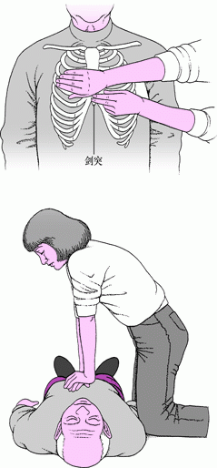

急救的事实
不论男女老少，所有人都可以在紧急时刻成为绝对的急救人员。
躯体物理损伤的处理行动
永远的原则：所有伤口，无论私自处理还是由医师治疗，在治疗后最初几天都应观察伤口有无感染症状（发红加重、压痛、发热或流脓）。如果出现感染的症状应在几小时内去就诊。
可见的出血应该用手指或手掌紧紧压住出血部位，至少5分钟，几乎都可以止血。应尽可能使出血部位高于心脏平面的位置，比如把出血的手臂抬高。如果是手臂或腿部严重损伤出血，在施加压力后仍继续出血，任何接受过止血带使用培训的人都可以使用止血带。
用清水冲洗伤口并清除所有杂物和微粒。温度较低的水可使血管收缩，有助于减缓出血。冲洗后仍留下的污垢和微粒可用水压更高的温水冲洗。如果用肥皂清洗伤口，应只清洗伤口周围，而不应施加在伤口上。不推荐酒精、碘酒和过氧化氢，这类刺激性液体可能损伤组织，影响愈合功能。
切口长度大于0.75厘米左右、切口在面部、切口较深或切口边缘裂开
出现现神经或肌腱损伤的症状，如出现感觉丧失、运动障碍或麻木
穿刺伤，特别是创口内可能有异物
较深的擦刮伤，伤口内的污物很难清除
伤者在过去5年中未接种过破伤风疫苗
如果能恰当保存断肢，有时可以在医院里重新接上。为了能延长断肢存活时间，应将它放入一个密封且干燥的塑料袋内。然后将袋子放进装有水和冰块的另一个袋子或容器内。不要用干冰。断肢不要放到水里。
对于被刀扎伤后的流血伤口，患者尽量取用身边能拿到的干净的布、毛巾或洁净织物进行加压包扎，也就是按住伤口，防止其继续出血。
如果胸部被刀扎或被异物穿刺后，患者不应自行把刀或穿刺物拔出伤口，这样有可能造成附近血管和神经的二次损伤，导致严重的后果。
表面损伤出血
阻止感染
特殊情况
身体断裂
尖锐刺穿
身体里面突发意外的急救行动
观察面部是否口角歪斜不对称
双臂平举90度，是否垂落
他是否口齿表达困难
一旦符合上述症状，立即为其拨打紧急救援电话，然后记录发作时间。
心跳骤停一旦发生，如果患者得不到及时的抢救，5分钟后可造成大脑和其他重要器官组织永久的损害，8分钟以上则大概率造成死亡。因此心跳骤停后的心肺复苏操作必须立即在原地进行，为进一步抢救直至挽回心搏骤停伤病员的生命而赢得最宝贵的时间。应该在心跳骤停4分钟之内给予心肺复苏操作。
判断他是否心跳骤停：心脏骤停患者会躺卧不动，与他说话无回答或对刺激没有反应，并且没有呼吸或是呼吸异常(终末濒死喘息)。
1.如果发现心跳骤停，首先拨打医疗急救电话，之后立即进行CPR心肺复苏和AED除颤。
2.在对患者进行CPR心肺复苏操作前，非专业医疗人员不应该检查脉搏，应尽快开始CPR心肺复苏。
-

为心肺复苏 (CPR) 而进行胸外按压时，施救者跪在患者一侧，手臂绷直，俯身朝向患者。两掌叠放在患者的胸骨最下端（称为剑突）正上方（约两指宽）的位置。施救者对成人胸部的按压深度至少为5厘米，每分钟按压胸部约100～120次，按压时通过全身重量发力，而不仅仅是借助手臂力量。每次按压之间需要使胸部完全回弹到原始高度。
附注：以每分钟100~120次的频率用力按压。美国心脏协会建议按照《Stayin' Alive》这首歌的节拍进行胸外按压。注意每次用力后要让胸部回弹。
如果没有接受过CPR培训，仍应该继续进行胸外按压，直到患者出现活动迹象或急救医生接管为止。如果您已接受过CPR 培训，请继续开通气道并进行人工呼吸。
施救者每按压胸部30次后做2次人工呼吸，然后以30:2的比例重复该过程，应持续到急救医生接手救护工作。胸外按压会让施救者很快变得疲劳，导致按压力度减弱以至于无法有效循环血液。因此，如果有2名或2名以上施救者，他们应该每2分钟轮换一次。如果施救者已经感到疲劳，应提前换人。
3.在进行CPR心肺复苏动作的同时(此时应该有人拨打了医疗急救电话，如果只有自己一人，必须要在执行CPR前联系医疗急救电话)，其他人在可用的情况下取得AED自动体外除颤器，CPR的操作不应该为等待AED而推迟进行，取回AED后可立即使用它。
心肺复苏一旦施行便不应停止，除非是以下情况1.伤者恢复脉搏及呼吸(如只恢复脉搏，则隔5秒吹气一次的方式进行人工呼吸)，2.医护人员到场接手，3.急救员已筋疲力尽，4.AED在分析心率以及进行电击时指示离开伤者。
严重提示：如果自己不敢为患者进行心肺复苏操作或不确定怎么正确操作，也应该尝试，这总比什么都不做要好。行动起来也许可以救回别人的生命。不论男女老少，所有人都可以在紧急时刻成为绝对的急救人员。
中风
判断他人是否中风
心跳骤停和猝死
实施心肺复苏操作
意外失误的急救行动
溺水
触电
通用人体生化保护和应对装备
防尘口罩指的是一次性、较为简陋的型号。一些形态类似于防尘口罩的口罩也有专门的性能（过滤、内漏）认证，如医护人员使用的外科口罩和过滤烟尘的N95口罩。外科口罩多为医护人员所用，主要是阻挡佩戴者呼吸道分泌物沾污他人或环境的用具，亦被广泛地用于预防呼吸道传染病如严重急性呼吸道综合征、流感的传播。防尘口罩在亚洲城市中用以日常生活中以阻挡烟尘。
一般人多以为外科口罩或类似的口罩可以过滤空气中的有害物质，但实际上外科口罩的设计最主要的目的是阻挡佩戴者的口鼻飞沫，过滤空气中微粒的能力极为有限，更遑论过滤空气中的有害气体。在香港和澳门，其卫生部门亦鼓励市民佩戴以预防呼吸道传染病，而市民亦普遍接受。不过美国疾病控制与预防中心对外科口罩可以预防佩戴者感染呼吸道疾病则抱持怀疑态度，并且欧美民众也甚少佩戴口罩。当欧美等国家宣传戴口罩的重要性后，戴口罩的人数显著增加，但仍有人拒绝戴口罩，更有人因店员劝告戴口罩而开枪，并和警方驳火。
物品列表：活性炭口罩，N95口罩，KF94口罩，PM2.5口罩。
封闭式护目镜可防止99%的杂物进入，而加上环绕式设计或侧面防护罩可提供侧面保护。它不仅可以为眼球免去物理外力带来的损伤，还可以保护眼部免受化学、生物制剂的伤害。
尽管每个职业、每个社会角色的生活环境天差地别，但他们的眼部都需要配上保护措施。可惜的是，社会上99%的人不会佩戴护目镜。
2
3